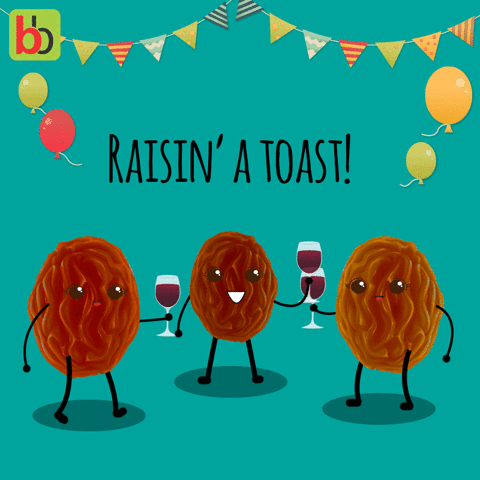

chapter16.2--handout
Background Information
Why does Scottish do not like to be called the English？ 苏格兰人为什么不喜欢被称为英国人
Mike said. "Just us three. We're going to festa the bloody English. I hope you're not English? I'm Scotch. I hate the English..."
在今天的最后一段话中Mike说道：“就我们三个人。我们领这帮该死的英国佬看热闹去。希望你不是英国人。我是苏格兰人。我讨厌英国人。”
从Mike的言语和语气中我们可以看出身为苏格兰人的Mike对于English称呼的鄙视。English一般指英格兰人，下面我们一起了解一下苏格兰和英格兰有什么恩恩怨怨。
英国全称为大不列颠及北爱尔兰联合王国（The United Kingdom of Great Britain and Northern Ireland），由英格兰（England）、威尔士（Wales）、苏格兰（Scotland） 和北爱尔兰（Northern Ireland）组成，而整个英国的历史也就是由这四个区域的历史交织组成。这个联邦制国家除了都支持君主立宪制，他们在语言、文化、传统甚至法律上都存在一定差别，苏格兰与英格兰的恩怨纠葛由来已久，他们谁都不服谁。
公元前54年，罗马帝国( Roman Empire ) 军队渡过英吉利海峡（the English Channel ），入侵不列颠岛，那时候的不列颠岛上居住的是凯尔特人(Celtic)，跟精锐的罗马军队相比，基本就是原始人( primitive people). 罗马人打败了凯尔特人，但是由于苏格兰地形复杂，民风彪悍，不好管理，于是罗马放弃了苏格兰，而是改为在英格兰、苏格兰交界的地方修长城。
公元11世纪，邓肯一世继承了苏格兰地区的王国的王位，没多久又被麦克白推翻，过了十几年，邓肯一世的儿子马尔康姆三世复仇，重登大宝。（这就是莎士比亚悲剧《麦克白》(Macbeth) 的故事原型）。
反应苏格兰反英战争最有影响力的电影：《勇敢的心》 在苏格兰与英格兰的历史恩怨中，最广为人知的就是13-14世纪的苏格兰抗英战争了，这极大程度上要归功于美国电影《勇敢的心》，以苏格兰历史上的传奇英雄威廉·华莱士为原型，他这场战争中率领起义军奋起反抗英军，并在1305年被杀害。在1314年大胜英格兰国王爱德华二世以后，苏格兰恢复了事实上的独立。
不过16到17世纪间，苏格兰与英格兰之间的关系也谈不上多好，比如克伦威尔在1650年又率领英格兰军队再次攻占苏格兰。只是在1660年查理二世复辟以后，苏格兰才自动恢复了独立地位，直到1707年与英格兰在保持王位联合基础的情况下，和平完成合并。
从1688年起，苏格兰又被英格兰拖入多场战争，更是彻底失去了法国、荷兰等市场。
1707年的合并，实际上是苏格兰王国在万般无奈的情况下以出卖自身独立性——不再保留独立国家。事实上在1703-1704年，苏格兰和英格兰之间的关系还一度极为紧张，几乎再次处于战争边缘。
苏格兰和英格兰的恩怨由来已久，当我们询问一个人是不是英国人的时候，我们可以问Are you British? 来避免尴尬。
Vocabulary
assault
n. 攻击；袭击，进攻; 威胁，殴打；侵犯人身 ( a military attack to take control of a place controlled by the enemy; the crime of physically attacking someone)
原文： He stood waiting, his face sallow, his hands fairly low, proudly and firmly waiting for the assault, ready to do battle for his lady love.
他站着等待，脸色蜡黄，放低双手，骄傲而毅然地迎候攻击，准备为心上人作一番奋战。
💧assault 还可以引申为“抨击”：under assault 表示“受到抨击”，比如：Traditional family values are increasingly under assault.
传统的家庭价值观日益受到抨击。
careen
v. （失控地）猛冲，疾驶（to move forwards quickly without control, making sudden sideways movements）
原文：The people shouted as each new luminous paper bubble careened, caught fire, and fell.
每当发光的纸球着了火，歪歪扭扭地往下落的时候，人们就尖声喊叫起来。
💧这里用careen描述纸球猛冲下落的动作，careen也可以用来形容车辆的失控，例如：The car careened around the corner. 汽车横冲直撞地驶过街角。
Crush Your Problems

Mike was on his feet proposing a toast.
迈克站起来祝酒。
💧表达精讲
①be on one's feet 表示“站起来”（to be standing up）, 也可以表示“大病痊愈（卧床后起身）”，比如：We’ll soon have you on your feet again.（我们很快就会让你恢复健康。）
②propose a toast 指“祝酒”，如果表示“向某人”只需要加上to, 比如：I’d like to propose a toast to the bride and groom.（我提议为新郎新娘干杯。）


"Do you think you amount to something, Cohn?"
“你以为你有什么了不起吗，科恩？”
💧表达精讲
amount to 可以用于指“（数量上）达到，总计”（add up to）, 也可以表示“等同于”（the same as）, 比如：Ultimately, their ideas amount to the same thing .（归根结底，他们的想法都是一回事。）
amount to something 也就是“算个人物，有点了不起”（形容某人是something其实就是说这个人有点来头的意思）。另外not amount to much/anything这个表达也就可以用来形容一个人没出息，比如：Jim’s never going to amount to much.（吉姆永远不会有多大出息。）

"Do you think you add to the party?"
“你以为你是来给我们助兴的？”
💧表达精讲
add to 我们再来复习一下，它可以表示“增加，增添（某种品质或情绪）”（to make a feeling or quality stronger and more noticeable）, 比如：This show will no doubt add to his growing reputation.（这场演出无疑将使他正在扩大的名声更加响亮。）
这里的add to the party可以理解为“给聚会带来乐子、助兴”或者是“给聚会增色”。

A balloon would start up jerkily, on a great bias, and be torn by the wind or blown against the houses of the square.
气球老是一蹦一蹦地以大幅度的斜线升起，不是被风扯破，就是被吹得撞在广场边的房子上。
💧表达精讲
①start up jerkily “一蹦一蹦地往上窜”； start在这里指“（像受到惊吓一样）突然跳起，蹦起”（to move suddenly）, 相当于jump的意思，start up也就是往上跳，窜；jerkily形容“颠簸地，不平稳地”（roughly, with many starts and stops）;
②on a great bias “以大幅度的斜线”，bias常见有“偏见”（prejudice）的意思，但on the biad表示的是“偏斜地，成对角地”（in a diagonal direction）. 这里形容的就是气球不是竖直上升，而是大幅度地斜着往上窜。

The magnesium flared and the fireworks exploded and chased about in the crowd.
镁光一闪，焰火爆炸了，在人群里乱窜。
💧表达精讲
①the magnesium flared “镁光一闪”；magnesium是化学元素当中的“镁”，flare作动词表示“（突然）火光闪耀”，还可以引申为“（强烈的情感）突然爆发”，比如：Tempers flared during the debate.（辩论时群情激奋。）
②chase about 即chase around “到处乱窜”。
Content Analysis
Jake把Romero介绍给了Mike和Brett, 但Mike开始醉态百出胡言乱语，Romero则和Brett相谈甚欢。结果这一幕被正好走进来的Montoya看见了。我们昨天提到过，Montoya出于信任把Romero托付给Jake, 不希望他和外国人搅和在一块，但今天他明显对于Jake破坏约定十分不悦——
💧Clue 1:Montoya is angry with Jake's betrayal.
Evidence 1:He started to smile at me, then he saw Pedro Romero with a big glass of cognac in his hand, sitting laughing between me and a woman with bare shoulders, at a table full of drunks. He did not even nod.
他正要朝我微笑，但是看见了佩德罗·罗梅罗手里拿着一大杯白兰地，坐在我和一个肩膀袒露的女人之间哈哈大笑，同桌的都是醉汉。他甚至连头也没点一下。
当然这一个场景惹怒的不只是Montoya, Mike虽然心里醋意横生，但他除了嘲讽Romero几句（"Tell him Brett wants to see him put on those green pants."）并没有胆量直接和他挑明（可能是出于自卑的心理），转而把怒火发泄在了Cohn身上（"No, I'd like to get this settled." He turned away from me. "Do you think you amount to something, Cohn? Do you think you belong here among us? People who are out to have a good time? For God's sake don't be so noisy, Cohn!"）
这一次Cohn没有闷声不吭，相反地，他甚至为此感到得意并且随时准备好要跟Mike干一架——
💧Clue 2:Cohn takes pleasure in his affair with Brett and ready to fight with Mike.
Evidence 1: Cohn still sat at the table. His face had the sallow, yellow look it got when he was insulted, but somehow he seemed to be enjoying it. The childish, drunken heroics of it. It was his affair with a lady of title.
科恩仍在桌边坐着。他每逢受到侮辱，脸色就变得蜡黄，但是他似乎也有点自得其乐。酒后夸夸其谈的蠢话。和他发生关系的可是一位有头衔的夫人。
Evidence 2:Cohn stood up and took off his glasses. He stood waiting, his face sallow, his hands fairly low, proudly and firmly waiting for the assault, ready to do battle for his lady love.
科恩站起来，摘下眼镜。他站着等待，脸色蜡黄，放低双手，骄傲而毅然地迎候攻击，准备为心上人作一番奋战。
作者在这里调侃了Cohn身上那种过时的骑士精神——“chivalry”（the medieval system, principles, and customs of knighthood）. 这种精神在中世纪被认为是贵族的一种高尚品格，它的核心就是：遵循社会规则，关爱自己和他人，尤其是敢于为自己心爱的女人奉献。
在本书开头的时候作者就给我们埋下了这个伏笔：当时Cohn在看一本叫作《紫色大地》（The Purple Land）的书，这本书里的主角就是一个四处和貌美的女郎们浪漫冒险的英国绅士（Cohn深受影响，因此还想要到南美去一趟）。
所以面对Mike的斥责，Cohn反而觉得自己是在光荣地为了Brett忍辱负重，甚至愿意和Mike公开对战（ready to do battle for his lady love）. 这种逞装英雄的自我陶醉在旁人看来其实可笑无比，虽然Mike醉得糊涂，但他有一句话却道出了事实，也就是Cohn很多时候都没有自知之明（"I'm not clever. But I do know when I'm not wanted. Why don't you see when you're not wanted, Cohn?"）接下来的情节马上就会证明他对Brett其实只是一厢情愿。
Today's Bonus
💧祝酒词的英文表达
今天的内容中出现了Mike向Romero祝酒的场景。(Mike was on his feet proposing a toast. "Let's all drink to — " he began. "Pedro Romero," I said. Everybody stood up.)
在祝酒的时候都有哪些英语表达呢？
1. 日常情况下可以使用 (Here's) to...
Here's to your health / success.
为你的健康 / 成功干杯！
Here's to our friendship！
为我们的友谊干杯！
Here's to Tom for his new job!
为汤姆的新工作干杯！
2. 祝福health, luck时: Good health! Good luck! All the best!
Your health, John—May you have a successful time in Manchester.
为了你的健康，约翰，也祝你在曼彻斯特前程似锦！
Helen raised her glass，“Good luck to you!” she said.
海伦举起酒杯，说道：“祝你好运！”
3. 主人或主持人邀客人喝酒时，通常用Cheers! Do the honors!
He raised his glass，“May you success! Cheers!”
他举起酒杯说：“祝你成功，干杯！”
Pat, you do the honors and propose the toast.
帕特，你敬酒吧。

4. 在比较随便的场合，通常用Here's how! 还有Happy landing! (美俚，原为空军用语) 等。
Oh，come, come, David. Here's how! 噢，来呀，来呀，大卫，干杯！
5. 在比较正式的场合，英美人有时也用一些外来语。
Prosit! (来源于拉丁语，意为 May it do good! To your health/ good luck! etc. )
6. 在陈述句中，英美语通常用toast，round, drink to... , drink a toast for/ to... , propose a toast for/to... 等词表示。
Friends，I'll give you a toast—to our president!
朋友们，我给大家敬酒，为我们总统干杯！
I now propose a toast to the friendship between our two people—to our friendship.
现在，我提议为我们两国人民的友谊干杯！